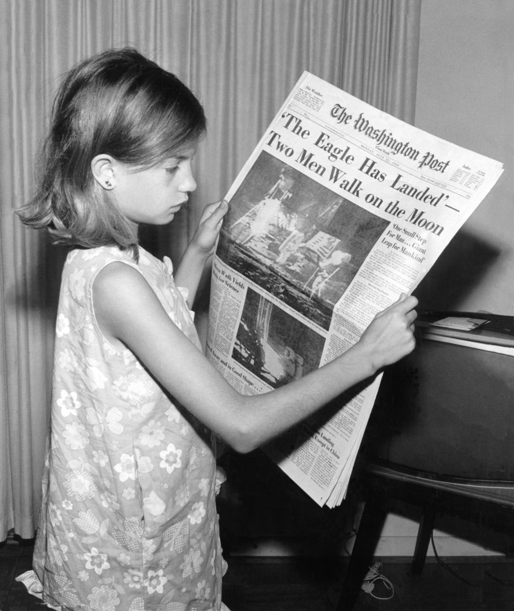

Article
Talk
Read
Edit
View history
Tools
From Wikipedia, the free encyclopedia
For other uses, see News (disambiguation).
"Current Events" redirects here. For the album by John Abercrombie, see Current Events (album). For the page on Wikipedia about current events, see Portal:Current events.
News is information about current events. This may be provided through many different media: word of mouth, printing, postal systems, broadcasting, electronic communication, or through the testimony of observers and witnesses to events. News is sometimes called "hard news" to differentiate it from soft media.
Common topics for news reports include war, government, politics, education, health, the environment, economy, business, fashion, entertainment, and sport, as well as quirky or unusual events. Government proclamations, concerning royal ceremonies, laws, taxes, public health, and criminals, have been dubbed news since ancient times. Technological and social developments, often driven by government communication and espionage networks, have increased the speed with which news can spread, as well as influenced its content.
Throughout history, people have transported new information through oral means. Having developed in China over centuries, newspapers became established in Europe during the early modern period. In the 20th century, radio and television became an important means of transmitting news. Whilst in the 21st, the internet has also begun to play a similar role.

Meaning
Etymology
The English word "news" developed in the 14th century as a special use of the plural form of "new". In Middle English, the equivalent word was newes, like the French nouvelles and the German Neues. Similar developments are found in the Slavic languages – namely cognates from Serbo-Croatian novost (from nov, "new"), Czech and Slovak noviny (from nový, "new"), the Polish nowiny, the Bulgarian novini and Russian novosti – and likewise in the Celtic languages: the Welsh newyddion (from newydd) and the Cornish nowodhow (from nowydh).[1][2]
Jessica Garretson Finch is credited with coining the phrase "current events" while teaching at Barnard College in the 1890s.[3]
Newness
As its name implies, "news" typically connotes the presentation of new information.[4][5] The newness of news gives it an uncertain quality which distinguishes it from the more careful investigations of history or other scholarly disciplines.[5][6][7] Whereas historians tend to view events as causally related manifestations of underlying processes, news stories tend to describe events in isolation, and to exclude discussion of the relationships between them.[8] News conspicuously describes the world in the present or immediate past, even when the most important aspects of a news story have occurred long in the past—or are expected to occur in the future. To make the news, an ongoing process must have some "peg", an event in time that anchors it to the present moment.[8][9] Relatedly, news often addresses aspects of reality which seem unusual, deviant, or out of the ordinary.[10] Hence the famous dictum that "Dog Bites Man" is not news, but "Man Bites Dog" is.[11]
Another corollary of the newness of news is that, as new technology enables new media to disseminate news more quickly, 'slower' forms of communication may move away from 'news' towards 'analysis'.[12]
Commodity
According to some theories, "news" is whatever the news industry sells.[13] Journalism, broadly understood along the same lines, is the act or occupation of collecting and providing news.[14][15] From a commercial perspective, news is simply one input, along with paper (or an electronic server) necessary to prepare a final product for distribution.[16] A news agency supplies this resource "wholesale" and publishers enhance it for retail.[17][18]
Tone
Most purveyors of news value impartiality, neutrality, and objectivity, despite the inherent difficulty of reporting without political bias.[19] Perception of these values has changed greatly over time as sensationalized 'tabloid journalism' has risen in popularity. Michael Schudson has argued that before the era of World War I and the concomitant rise of propaganda, journalists were not aware of the concept of bias in reporting, let alone actively correcting for it.[20] News is also sometimes said to portray the truth, but this relationship is elusive and qualified.[21]
Paradoxically, another property commonly attributed to news is sensationalism, the disproportionate focus on, and exaggeration of, emotive stories for public consumption.[22][23] This news is also not unrelated to gossip, the human practice of sharing information about other humans of mutual interest.[24] A common sensational topic is violence; hence another news dictum, "if it bleeds, it leads".[25]
Newsworthiness
Newsworthiness is defined as a subject having sufficient relevance to the public or a special audience to warrant press attention or coverage.[26]
News values seem to be common across cultures. People seem to be interested in news to the extent which it has a big impact, describes conflicts, happens nearby, involves well-known people, and deviates from the norms of everyday happenings.[27] War is a common news topic, partly because it involves unknown events that could pose personal danger.[28]